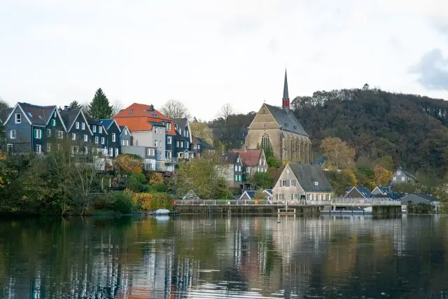
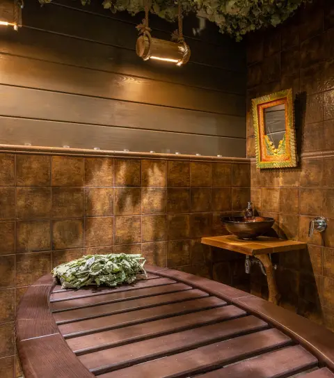

Offer · 3 nights
Lake time for two
Breakfast on the jetty, an evening in the lake sauna and the rowing boat for the trip to Bird Island.
- Breakfast
- Lake sauna
- Rowing boat
- Late Check-out
from €498 for two
Enquire: Lake time for twoChapter 1 of 11
A few composable building blocks instead of a utility matrix: most of them adapt to the space they are given through container queries, not to the window width. Use the Inspect button at the bottom right (or Alt+I) to click any block and see its code.
Tip: make the window narrower, or drag the dashed frames
.ncss-container is the centred, width-limited column with side padding – and the reference frame for every container query inside it. --narrow gives a comfortable reading width for running text.
Watch out: only use .ncss-container--narrow together with .ncss-container – on its own it is not centred, and bleed classes inside it break out lopsided.
.ncss-container – at most 75rem wide, centred, with fluid side padding.ncss-container .ncss-container--narrow – at most 45rem, for readingAll spacing tokens are clamp() values: they grow with the window width between a minimum and a maximum, with no breakpoints at all. The same scale drives the gap of stack/grid and the few spacing utilities.
Tip: make the window narrower – the bars shrink smoothly.
3xs2xsxssmmdlgxl2xl.ncss-stack stacks children vertically with even spacing (instead of margins on every element), .ncss-cluster lines them up horizontally and wraps on its own – for tags, buttons, metadata.
Offer · 3 nights
Breakfast on the jetty, an evening in the lake sauna and the rowing boat for the trip to Bird Island.
from €498 for two
Enquire: Lake time for twoFor everything that is neither a stack nor a flowing group: a row with a gap, optionally centred, spread or wrapping. .ncss-flex-1 lets a child fill the remaining space, .ncss-flex-auto keeps it at content width.
The default for tile grids: the number of columns follows from the available space and the minimum column width – not a single media query. The minimum width is a parameter right on the element.
Good to know: cards get equal heights automatically; --align-start turns that off. --ncss-grid-max prevents overly wide columns when there are only a few tiles.
Make the window narrower: 4 → 3 → 2 → 1 column

24 m² · garden side · from €149

28 m² · balcony facing the lake · from €189

38 m² · up to 3 guests · from €239

52 m² · two rooms · from €289
When the editors want “exactly four in a row”: --cols-2/3/4/6 switch to that number of columns above a fixed container width and to one column below it. What is measured is the surrounding .ncss-container, not the window.
Watch out: needs an ancestor with .ncss-container. Use spans (.ncss-col-span-2 …) in the bento grid instead – there they drop out cleanly when space runs short.
Drag the handle at the bottom right: one column below a 48rem frame width
 Town hall
Town hall Weekly market
Weekly market Bathing jetty
Bathing jetty Hiking trails
Hiking trailsThe one case a grid cannot do: with five tiles in thirds, the incomplete last row should sit centred. Each width class reacts to the flex grid’s width through its own container query – one class per fraction, no “class × breakpoint” matrix.
 Lakeside church
Lakeside church Boat harbour
Boat harbour Market square
Market square Christmas market
Christmas market
Lake promenadeTiles of different sizes in one grid: single tiles grow with .ncss-col-span-2 / .ncss-row-span-2, grid-auto-flow: dense fills the gaps. If the grid is too narrow for a span, the span is dropped instead of overflowing.
Watch out: dense only changes the visual order, not the tab order. Ready-made arrangements without classes on the tiles: --hero and --mosaic in the Modern UI chapter.

Lake sauna, steam bath and a panoramic pool at 28 °C.


Infusions at 3, 5 and 7 pm.

Hay baths and massages on request.
Images of different heights stacked without gaps – everywhere via CSS columns, and in browsers with display: grid-lanes (Safari 26.4+) automatically as true, row-ordered masonry.
Watch out: in the column fallback the reading order runs column by column – fine for galleries, not for content with a fixed order.


Building blocks query the width of their container, not the window: the same card sits side by side in a wide main column and stacked in a narrow sidebar. Visibility can be tied to the container width the same way.
Thresholds are the same everywhere: sm 24rem, md 36rem, lg 48rem, xl 56rem. For your own rules: @container ncss-container (min-width: …).
Drag the frame narrower: side by side from 32rem, the label switches at 36rem
Sat 28 Nov · from 2 pm
Mulled wine from the fishing club, a nativity play at 5 pm and the old carousel on the market square.
A section reaches both edges of the screen even though it stays inside the container in the markup – ideal for image bands and coloured areas. Put a .ncss-container back inside so the text stays in the column.
Watch out: it calculates with 100vw – every ancestor must be centred (as here).

Lake Seeburg
Bathrobes are ready, the water is 22 °C in summer, and the jetty is for our guests only.
Break out to the screen edge on just one side (-start/-end), from the middle of the column (-half-…) or symmetrically by a fixed amount (-center). Brings rhythm to long text pages.
Good to know: .ncss-bleed-center needs no centred ancestor – it grows by --ncss-bleed-amount relative to its own parent.
What began in 1912 as a fishermen’s inn with three guest rooms is now a house with 32 rooms. The jetty, the rowing boats and the habit of looking at the water first thing in the morning have stayed.
“The lake decides how the day turns out. We just prepare breakfast.”
The quote above reaches the left edge of the screen and stays in the column on the right. The image below does the opposite.

.ncss-bleed-end – to the right edgeHalf bleed starts in the middle of the column and ends at the screen edge – good for an image that “runs out” next to the text.
.ncss-bleed-half-endAnd when an element should be just a little wider than the text:

.ncss-bleed-center, wider by --ncss-space-md on each sideText flows around an image – float is still the right tool for that. NativeCSS only floats once the container is at least 28rem wide; below that the image becomes a normal block instead of squeezing the text into a thin leftover column. .ncss-float-shape-circle makes the text follow the circle.
Bleeding: .ncss-float-bleed-end combines wrapping with a bleed to the screen edge. Below 28rem, .ncss-center-narrow/.ncss-full-narrow control the alignment.
The lake parlour opens at half past six. Whitefish and char come from fisherman Huber in the morning, the vegetables from our own garden behind the house. Book early and you get the window table, with the lights of Seeburg reflected on the water.
Head chef Anna Ambach cooks five courses or à la carte, always with a vegetarian menu. The wine list is short and comes from small winemakers, most of them less than two hours away.
The next morning breakfast is served until half past eleven: croissants from our own bakery, honey from the neighbouring farm and eggs the way you like them. Here the text follows the round shape of the image instead of its rectangular box – shape-outside makes it possible.
Then it is out on the water: the rowing boats are included in the room rate, and Bird Island is twenty leisurely minutes away.
With .ncss-clear this paragraph starts below all images again.
This image floats on the right of the text and reaches the screen edge at the same time. It suits features where a photo should accompany the reading flow without interrupting it. Below a 28rem container width it becomes a perfectly normal, full-width image above the text instead.
Done – the rest of the page flows normally again.
.ncss-sticky makes an element stick while scrolling – on the right, the booking summary stays put while the day list scrolls past. .ncss-sticky-container creates its own internally scrolling area in which the header (.ncss-sticky) and footer (.ncss-sticky--bottom) stay in place.
Watch out: if the element sticks below a fixed header, set the distance with --ncss-sticky-offset. An overflow on an ancestor prevents sticky.
Mist over the jetty – early risers have the lake to themselves.
Breakfast until midday, with honey from the neighbouring farm.
By rowing boat to Bird Island, twenty minutes there.
Snack on the terrace, then the sunbathing lawn.
First infusion in the lake sauna, cool down in the lake.
Panoramic pool at 28 °C with a view of the mountains.
Dinner in the lake parlour, five courses or à la carte.
Lights on the water, one more glass on the balcony.
.ncss-sticky-container – scroll inside:
The footer should sit at the bottom even on short pages: .ncss-page-shell turns <body> into a flex column at least as tall as the screen, .ncss-stretch lets the main content fill the rest. This page uses exactly that.
Mini page with little content (height limited to 20rem here instead of the screen height):
This page is short. The footer is still at the bottom.
The classic for feature sections. Left or right is decided purely by markup order – when stacked, the image then sits on top or below, and reading and focus order stay consistent. Side by side from a 36rem container width.
Watch out: .ncss-split-container must be a separate wrapping element – it provides the width the split reacts to.
Welcome
Bright, quiet and without frills: almost every room looks out over the lake, and the jetty is for our guests only.
Image right, top-aligned, 60/40
The image comes last in the markup and therefore ends up on the right. --ncss-split-media-width: 40% makes it narrower, --align-start aligns both columns at the top.
Coloured sections structure long pages. On the brand surfaces the text turns light automatically; a .ncss-card nested inside still stays normally readable. Combine with .ncss-full-bleed for edge-to-edge areas.
A calm surface for secondary content such as opening hours.
Light text comes automatically.
A card inside stays dark on light.
For a second accent, such as an offer.
An accordion on the left, the image for the open item on the right – entirely without JavaScript, using <details name> and :has(). The optional js/view-transitions.js smooths the image change (data-transition="slide").
Watch out: every image appears twice in the markup (desktop column and mobile copy) – on purpose, it still loads only once. name must be unique per accordion.
28 °C, marble and large lattice windows facing the lake. Open to children until 3 pm.

85 °C, mountain-pine infusions – and afterwards straight off the jetty into the lake.
Warm light, wooden loungers and one rule: phones take a break here.
An image or text moves into a margin column next to the paragraph it belongs to – with no positioning at all: the note sits in the markup directly after (-end) or before (-start) its paragraph. In narrow containers it simply joins the text flow.
The lakeside church is older than the village itself: fishermen built the first chapel around 1300 on the rock by the shore so it could be seen from the water.
Today’s baroque building dates from the 18th century. In summer there are organ concerts on Fridays; in fine weather the doors to the lake stay open.
The third paragraph has no note – the margin column simply stays empty.
.ncss-divider--vertical separates groups within a row and takes on its height; a plain <hr> is already styled. .ncss-transform-center places an element exactly in the middle of the nearest positioned ancestor – such as a label on a photo.
Just a 3-minute walk to the lake